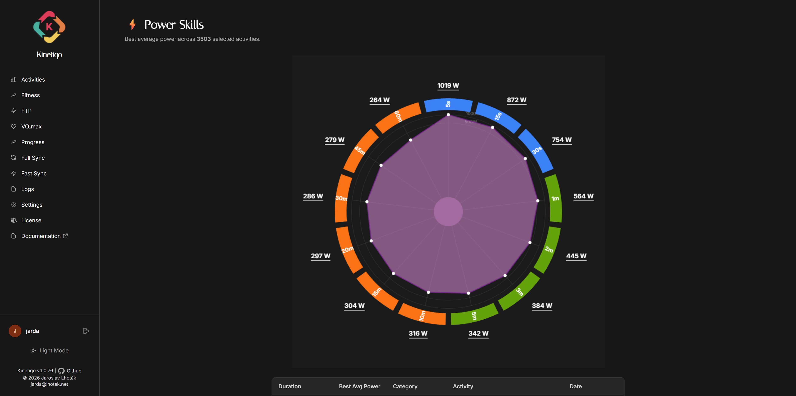
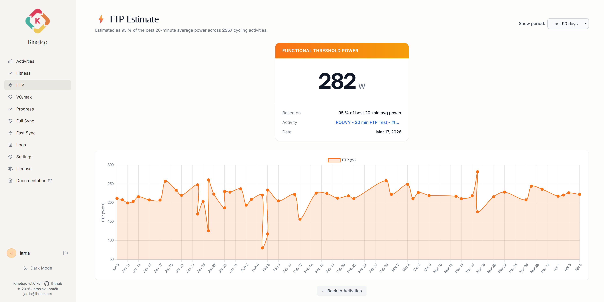
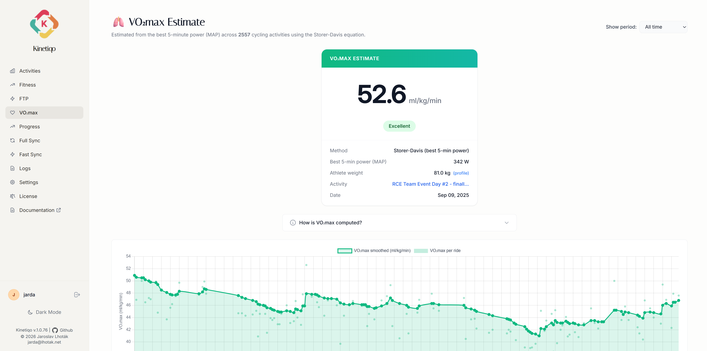

Unlock advanced power curves, automated FTP tracking, VO₂max trends, and impulse-response fitness model modeling.
Track your maximal power output across 7 duration benchmarks: 5s, 30s, 1m, 5m, 10m, 20m, and 1 hour. Identify whether you are a Sprinter, Puncheur, Time-Trialist, or Climber.

Never miss an FTP increase. Kinetiqo scans every ride stream for peak 20-minute power outputs and logs estimated Functional Threshold Power trends over time.

Monitor Chronic Training Load (Fitness), Acute Training Load (Fatigue), and Training Stress Balance (Form) using Banister exponential decay modeling calculated via pandas.
